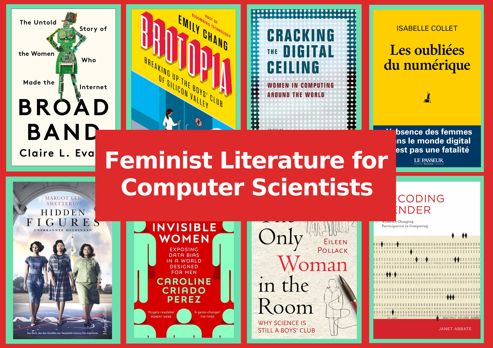
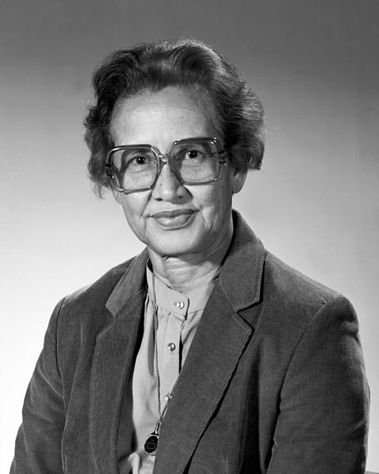
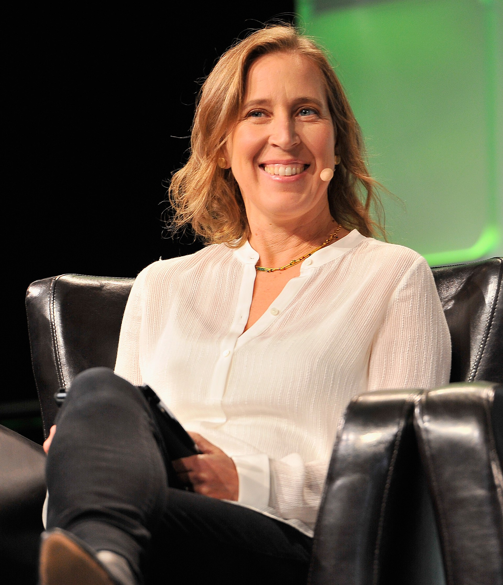
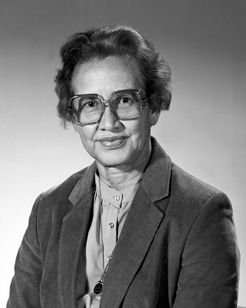
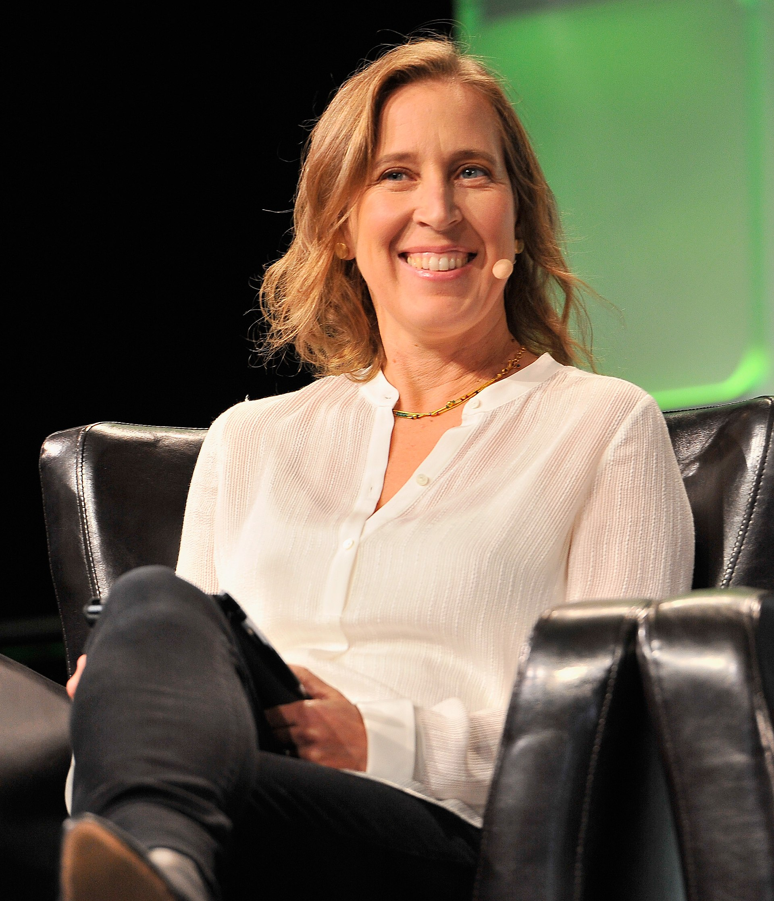
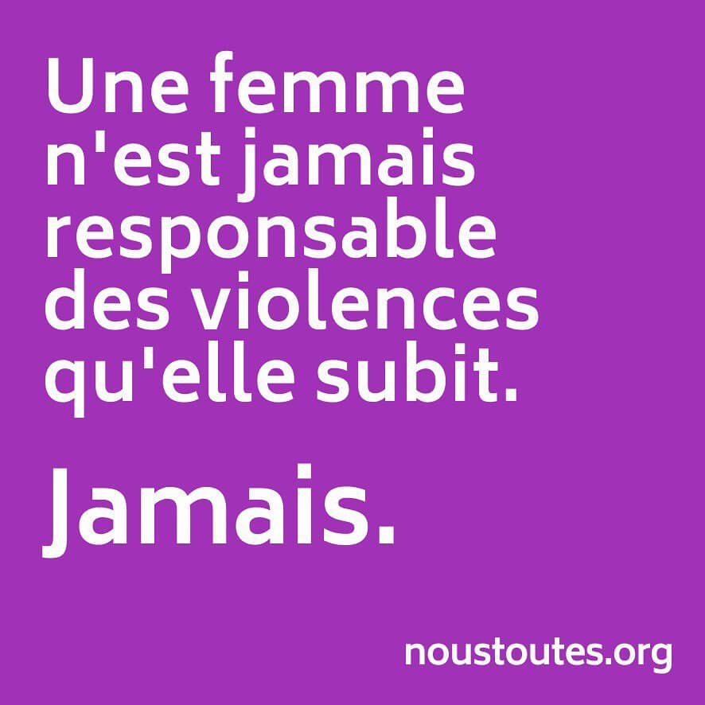
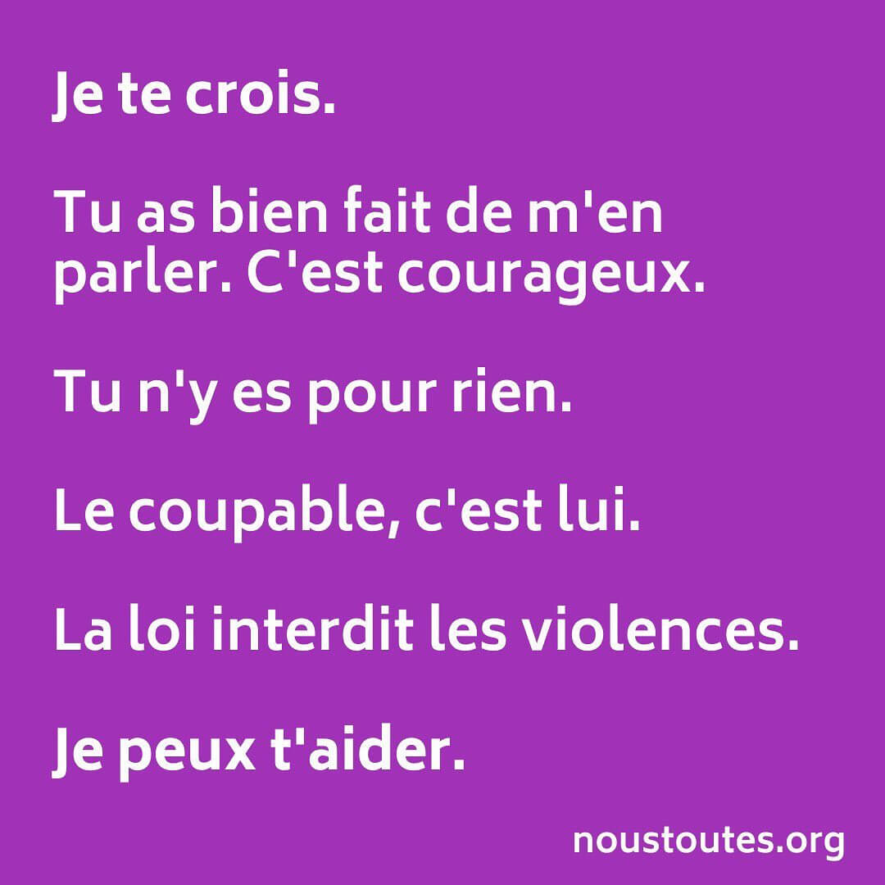
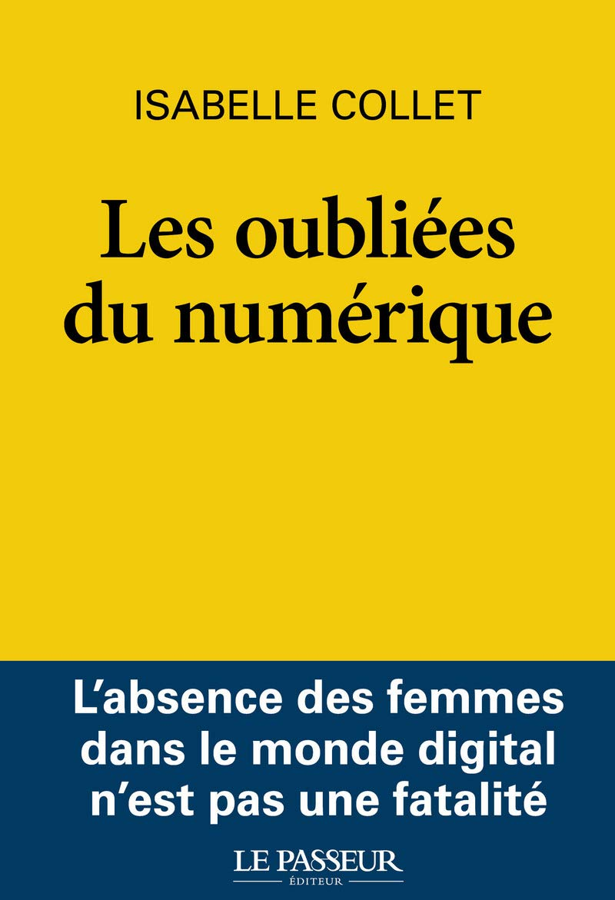

FEMINISM
I am convinced that equality between women and men, as required by Article 23 of the Charter of Fundamental Rights of the European Union, is far from being achieved.
I am convinced that this is an important issue on which we should talk and discuss more.
That is why I call myself a feminist.
(Jacinda Ardern, Prime Minister of New-Zealand, gave in 2015 a similar statement, but with more words)
This page is dedicated to draw people's attention to this issue.
Because we must name the problem in order to make it visible and then tackle it together as a society.
AT WORK
Current
- Member of the Code of Conduct Team of TPMPC'22
Previous
- Former member of the Gender Equality Task Team of the research institute IRISA and Inria Rennes Bretagne Atlantique
- List of Feminst Literature for Computer Scientists
- Organization of a Reading Circle at IRISA/Inria-RBA (Oct 2020 - Dec 2021) [slides of two presentations about it can be found at talks]
- Mediation: LcodentLcréent program (They code, they create) to encourage female college students to learn Python and use it to create their own art
- Mediation: J'peux pas j'ai informatique day to raise awareness of college students that computer science is not only for geeks
VISIBILITY
 



{kind=link}
{kind=link}
.jpg){kind=link}
- Posters about women with great contributions in maths and/or computer science - to be continued (English)
- Ada Lovelace (see also this France Culture podcast (French), giving more interesting insights to her life, thanks S. Moreau for drawing my attention to it)
- Emmy Noether (see also this very affectionate and cordial BBC podcast (English), thanks W. Widel for recommanding it)
- Katherine Johnson
- Joan Clarke Wikipedia Article
- Susan Wojcicki Wikipedia Article
- Alice in Numberland blog (English) by Alice Silverberg; some of my "favorites"
- "Alice doesn't want to give a seminar talk, does she?"
- "You'll want to have babies"
- "Leveling the playing field?
- ACM Diversity, Equity, and Inclusion suggestions for wording in scientific papers Words Matter
- Follow me on Twitter @KBoudgoust (English/German/French)
VIDEO
 {kind=link}
{kind=link}
- KREATUR Series on ARTE (French/German)
- TED Talk of Dame Stephanie Shirley - Why do ambitious women have flat heads? TED talk (English)
- Hidden Figures Trailer (English)
- Picture a Scientist Website (English)
- Formation #NousToutes contre les violences sexistes et sexuelles niveau 1 et niveau 2 (French)
- La science a mauvais genre Documentary réalisé par Laure Delalex (French)
AUDIO
- YESSS Un podcast de Warriors Podcast (French, for example #17 Warriors en grandes ecoles )
- Podcast a soi on ARTE radio Podcast (French, for example Femmes noires et flamboyantes)
- Les couilles sur la table on Binge audio Podcast (French, for example Des ordis, des souris et des hommes)
- Der Lila Podcast (German, for example Wütende Frauen verändern die Welt)
- Streit um §219a ein Podcast von der Bundeszentrale für politische Bildung (German)
- Podcast Sophie Germain Project de Sylvie Dodeller (French)
- Podcastkollektiv Haecksenwerk der Haecksen. Es geht um die ganze Bandbreite von Technik, Kultur und Feminismus. (German)
BOOKS
{kind=link}
.png){kind=link}
{kind=link}
- Fruit of Knowledge by Liv Stroemquist with a review of The Guardian (English)
- Dear Ijeawele, or A Feminist Manifesto in Fifteen Suggestions by Chimamanda Ngozi Adichie (English)
- Untenrum frei by Margarete Stokowski (German)
- Fearless Females by Marta Breen (English)
- Brotopia by Emily Chang with a interesting summary & discussion video at the Grace Hopper Celebration 2018 and my personal summary of the book (English)
- Les oubliées du numérique by Isabelle Collet (French)